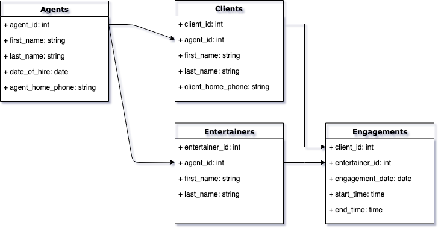
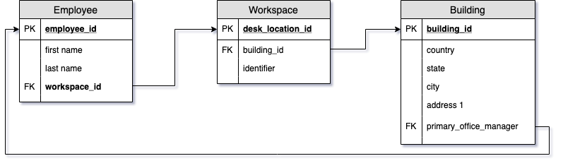
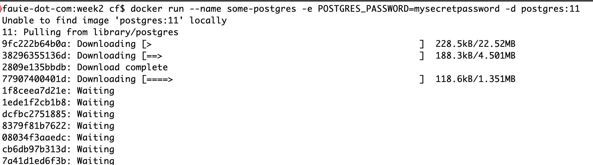

--- # INFO 610 Fall 2020 <div style="text-align:center;font-size: 1.5;line-height:1.8em;">Week 1</div> --- # Course Content We will be using Canvas:<a href="https://virginiacommonwealth.instructure.com/"> https://virginiacommonwealth.instructure.com/</a> I do not know how to use Canvas, so bear with me. --- # Books <ul> <li><a href="https://amzn.to/2H2ixIr">Database Design for Mere Mortals: A Hands-On Guide to Relational Database Design (3rd Edition)</a></li> <li> <a href="https://amzn.to/31EeaLl">Learning PostgreSQL 11: A beginner's guide to building high-performance PostgreSQL database solutions, 3rd Edition</a></li> </ul> --- --- # Syllabus <a href="https://virginiacommonwealth.instructure.com/courses/18107/assignments/syllabus">https://virginiacommonwealth.instructure.com/courses/18107/assignments/syllabus</a> --- # HONOR CODE I have a very strict anti-cheating policy. If there are any infractions of the honor code in this class you will get a zero for the class in addition to any punishments deemed necessary by the university. Do. Not. Cheat. I hate sending students to the honor board, but I have, and I will. --- --- # Relational Database <i>(Hernandez, Ch1, starting pg 12)</i> 1969 - Dr. Edgar F. Codd - IBM <br/> <br/> As with many innovations, ... <quote>"his dissatisfaction with the database models and the database products of the time led him to begin thinking of ways to apply the disciplines and structures of mathematics to solve the myrid of problems he had been encountering."</quote> --- # Starter Theory A relational database stores data in relations, which the user perceives as tables.<br/> Each relation/table is composed of records and attributes. <br/> <i>tuples, fields</i> <br/> Two characteristics of the database allow the data to exist independently of the way it is represented: <ul> <li> Physical order of storage is immaterial</li> <li>Each record in a table is recognized by a field unique value</li> </ul> --- # Example of Tables Page 14 - Agents, Clients<br/> Page 14 - Entertainers, Engagements<br/> <br/> <br/> <strong>Discussion</strong><br/><br/> <i>How would we model information about a school program, like VCU's IS program?</i> --- # Relationships of Relations Relational model categorizes relationships as <br/> * One to One <br/> * One to Many <br/> * many-to-many - future class --- # Retrieving Data We will spend a lot of time learning how to query relational databases using <br/> <strong>"Structured Query Language" or "SQL"</strong> There are three main components of a SQL query: <ol> <li>SELECT ... FROM</li> <li>WHERE</li> <li>ORDER BY</li> </ol> --- # Breaking it down <strong>SELECT ... FROM</strong> - What fields do you want to SELECT and FROM which tables is the data stored<br/><br/> <strong>WHERE</strong> - (optional) What condition must the data meet for you to retrieve it</br><br/> <strong>ORDER BY</strong> - (optional) Do you want your data sorted?<br/><br/> --- # Example Queries | ClientID | AgentID | ClientFirstName | ClientLastName| ClientPhoneNumber | |---|---|---|---|---| | 1 | 100 | Mickey | Mouse | 888-555-1212 | | 2 | 101 | Isaac | Newton | 804-555-1212 | | 3 | 102 | Magic | Johnson | 800-555-1212 | * Retrieving Data <strong>Find clients with lastname 'Mouse'</strong><br/> <i>select * from clients where ClientLastName = 'Mouse'</i><br/><br/> <strong>Find clients with Agent 102</strong><br/> <i>select * from clients where AgentID = 102</i><br/><br/> <strong>Get specific fields</strong><br/> <i>select ClientFirstName, ClientLastName, ClientPhoneNumber from agents </i><br/><br/> --- # Advantages of Relational Databases <ul> <li>Built in Multi Level Integrity</li> <li>Logical and Physical Data Independance from Applications</li> <li>Guaranteed Data Consistency and Accuracy</li> <li>Easy* data retrieval</li> </ul> --- # Relational Database Management Systems A <i>relational database management system (RDBMS)</i> is a software application program you use to create, maintain, modify and manipulate a relational database<br/> <ul> <li>Oracle</li> <li>Microsoft SQL Server</li> <li>Microsoft Access</li> <li>MySQL/MariaDB</li> <li>Postgresql</li> <li>Amazon RDS</li> </ul> --- # Docker On your laptops, please install Docker:<br/> https://docs.docker.com/install/<br/> This will be successful when you can run the following on your command line: ```bash docker run hello-world ``` THEN Attempt this: ```bash $ docker run --name some-postgres -e POSTGRES_PASSWORD=mysecretpassword -d postgres:11 ```  --- # Test it out ```bash docker exec -it some-postgres bash root@deb673c4061d:/# su postgres postgres@deb673c4061d:/$ psql psql (11.9 (Debian 11.9-1.pgdg90+1)) Type "help" for help. postgres=# \conninfo You are connected to database "postgres" as user "postgres" via socket in "/var/run/postgresql" at port "5432". postgres-# \q postgres@deb673c4061d:/$ exit exit ``` --- # Next Week * Database Design * Methodology * ER Diagrams * Terminology * Relationships ---